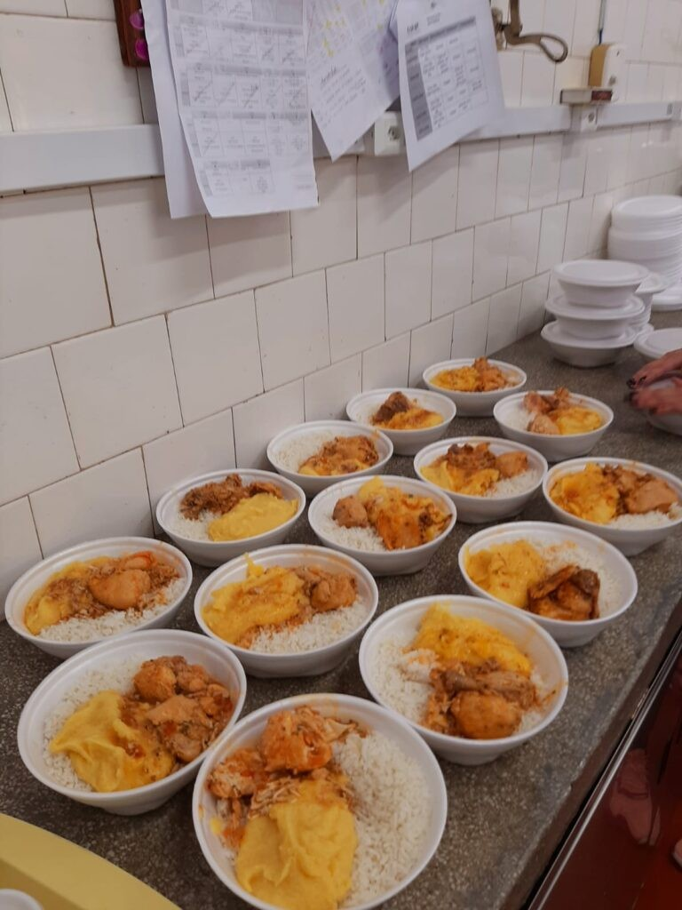
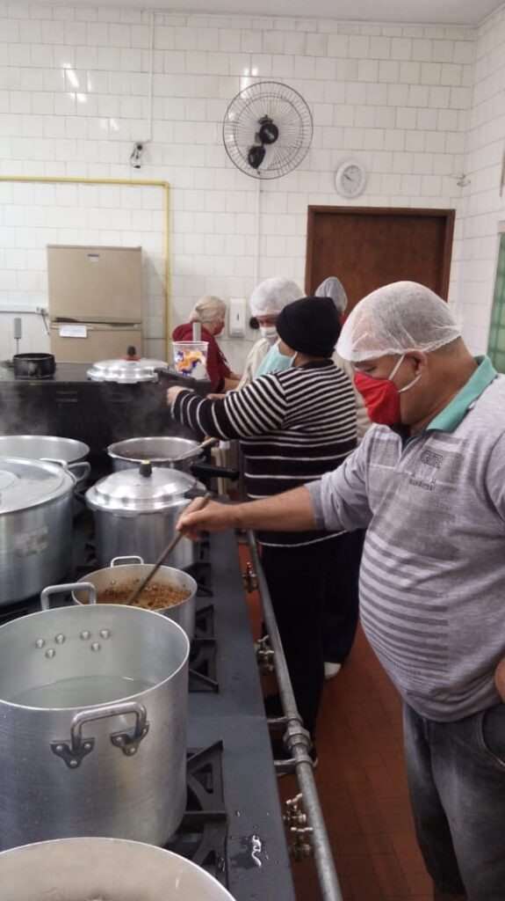
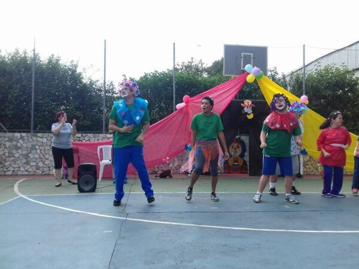
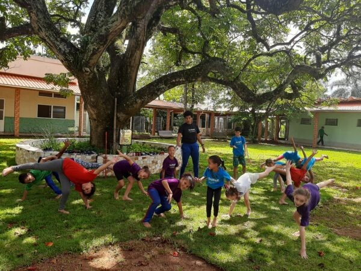
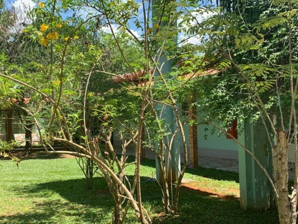
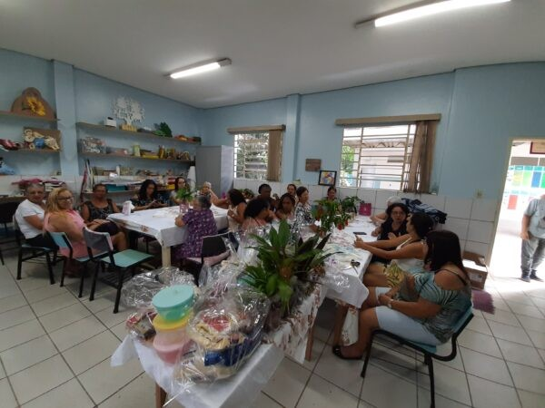

UM POUCO SOBRE NÓS
Venha conhecer nossa Instituição

Restaurante do Bem
O Programa Restaurante do Bem foi realizado entre março e dezembro/2021, ofertando aproximadamente 22.000 refeições a pessoas em situação de vulnerabilidade socioeconômica da... LEIA MAIS

Amigos do Amor em Ação
Os Amigos do Amor em Ação são voluntários, colaboradores do Núcleo Jesuíno de Guarulhos e seus amigos, que se enturmaram para preparar e distribuir uma refeição aos irmãos em situação de... LEIA MAIS

Educação Especial
No decorrer de sua história, a IAKAP colaborou com o Município e/ou com o Estado, oferecendo atividades escolares que não existiam nas proximidades. Assim, na Instituição funcionou a primeira “Creche”... LEIA MAIS

Projeto Expressão
O Projeto Expressão foi implantado para assegurar a crianças e adolescentes um espaço de referência para o convívio grupal, comunitário e social e desenvolvimento de relações de... LEIA MAIS

Os jardins…
Os jardins da IAKAP são um capítulo à parte na assistência que todos recebemos. Encantam, acolhem, refrescam, revitalizam… , de tal forma que resolvemos incluir os jardins como uma atividade... LEIA MAIS

Oficina das Artes
A Oficina das Artes foi idealizada para o público adulto, principalmente mulheres de baixa renda, proporcionando um espaço de socialização e aprendizado, reconhecimento de direitos e... LEIA MAISVocê gostaria de participar da IAKAP?
Entre em contato para conhecer um pouco mais sobre a instituição, clicando no botão
Site desenvolvido por Gabriel Lopes - Dev Full-Stack